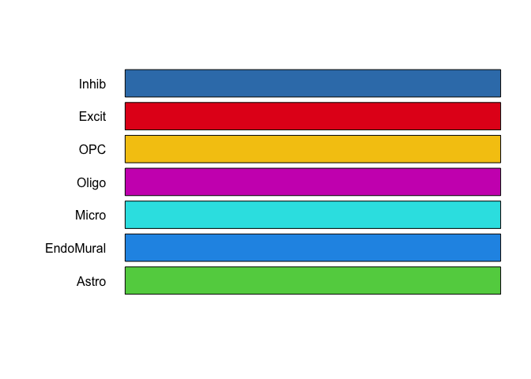
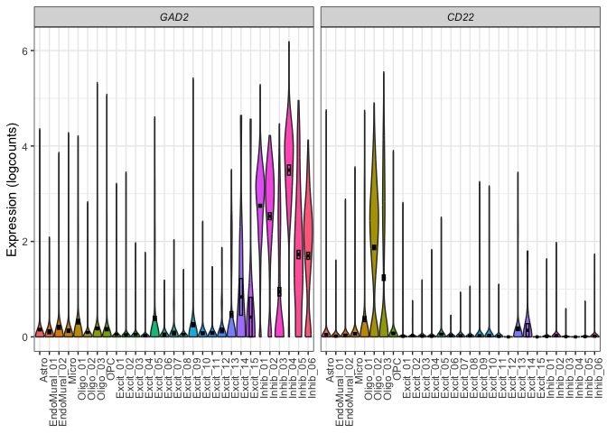
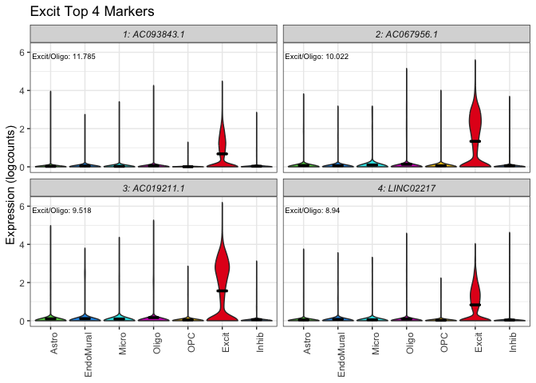
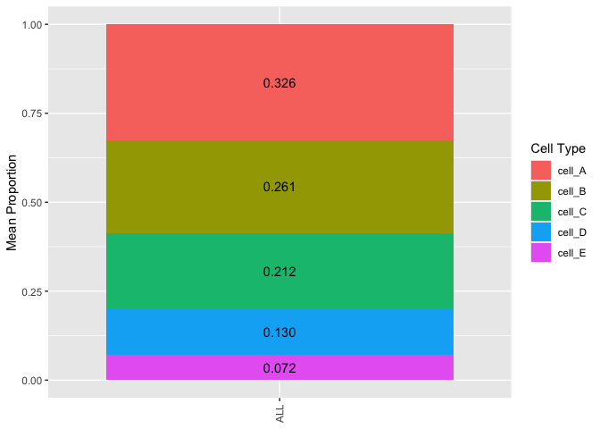
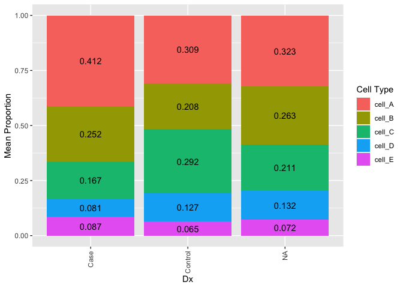

The goal of DeconvoBuddies is to provide helper functions for the deconvolution process
Installation instructions
Get the latest stable R release from CRAN. Then install DeconvoBuddies using from Bioconductor the following code:
if (!requireNamespace("BiocManager", quietly = TRUE)) {
install.packages("BiocManager")
}
BiocManager::install("DeconvoBuddies")And the development version from GitHub with:
BiocManager::install("LieberInstitute/DeconvoBuddies")Access Data
Use fetch_deconvo_data Download RNA seqencing data from the Human DLPFC.
rse_gene: 110 samples of bulk RNA-seq.sce: snRNA-seq data from the Human DLPFC.sce_DLPFC_example: Sub-set ofsceuseful for testing.
if (!exists("sce_DLPFC_example")) sce_DLPFC_example <- fetch_deconvo_data("sce_DLPFC_example")
#> 2024-07-25 13:30:06.916492 loading file /Users/louise.huuki/Library/Caches/org.R-project.R/R/BiocFileCache/58f79a421ca_sce_DLPFC_example.Rdata%3Frlkey%3Dv3z4u8ru0d2y12zgdl1az07q9%26st%3D1dcfqc1i%26dl%3D1Marker Finding
Find cell type specific markers with get_mean_ratio for each gene x cell type, calculates the Mean Ratio of expression for each gene between a target cell type and the next highest cell type.
marker_stats <- get_mean_ratio(sce_DLPFC_example, cellType_col = "cellType_broad_hc")Extablish Color Scheme
cell_types <- levels(sce_DLPFC_example$cellType_broad_hc)
cell_colors <- create_cell_colors(cell_types = cell_types, pallet = "classic", split = "\\.", preview = TRUE)
Plot Expression of Specified Genes
Quickly create violin plot of gene expression.
plot_gene_express(sce = sce_DLPFC_example, cat = "cellType_broad_hc", genes = c("GAD2", "CD22"))
#> No summary function supplied, defaulting to `mean_se()`
#> No summary function supplied, defaulting to `mean_se()`
plot_gene_express(sce = sce_DLPFC_example, cat = "cellType_hc", genes = c("GAD2", "CD22"))
#> No summary function supplied, defaulting to `mean_se()`
#> No summary function supplied, defaulting to `mean_se()`
Plot Expression of Marker Genes
Plot the expression of top marker genes from the statistics calculated in get_mean_ratio.
plot_marker_express(sce_DLPFC_example,
marker_stats,
cellType_col = "cellType_broad_hc",
cell_type = "Excit",
gene_col = "gene",
color_pal = cell_colors
)
#> No summary function supplied, defaulting to `mean_se()`
#> No summary function supplied, defaulting to `mean_se()`
#> No summary function supplied, defaulting to `mean_se()`
#> No summary function supplied, defaulting to `mean_se()`
Create Composition Bar Plot
# extract phenotype data
pd <- SummarizedExperiment::colData(rse_bulk_test) |>
as.data.frame()
# Create a long table of estimated proportion data with phenotype details
est_prop_long <- est_prop |>
tibble::rownames_to_column("RNum") |>
tidyr::pivot_longer(!RNum, names_to = "cell_type", values_to = "prop") |>
dplyr::left_join(pd |> dplyr::select(RNum, Dx)) |>
dplyr::mutate(a = "a")
#> Joining with `by = join_by(RNum)`
## plot composition bar of average proportion
plot_composition_bar(est_prop_long)
## plot composition bar of average proportion by Dx
plot_composition_bar(est_prop_long, x_col = "Dx")
## Set a mininum value for adding text
plot_composition_bar(est_prop_long, x_col = "Dx", min_prop_text = 0.1)Citation
Below is the citation output from using citation('DeconvoBuddies') in R. Please run this yourself to check for any updates on how to cite DeconvoBuddies.
print(citation("DeconvoBuddies"), bibtex = TRUE)
#> To cite package 'DeconvoBuddies' in publications use:
#>
#> Huuki-Myers LA, Maynard KR, Hicks SC, Zandi P, Kleinman JE, Hyde TM,
#> Goes FS, Collado-Torres L (2024). _DeconvoBuddies: a R/Bioconductor
#> package with deconvolution helper functions_.
#> doi:10.18129/B9.bioc.DeconvoBuddies
#> <https://doi.org/10.18129/B9.bioc.DeconvoBuddies>,
#> https://github.com/LieberInstitute/DeconvoBuddies/DeconvoBuddies - R
#> package version 0.99.0,
#> <http://www.bioconductor.org/packages/DeconvoBuddies>.
#>
#> A BibTeX entry for LaTeX users is
#>
#> @Manual{,
#> title = {DeconvoBuddies: a R/Bioconductor package with deconvolution helper functions},
#> author = {Louise A. Huuki-Myers and Kristen R. Maynard and Stephanie C. Hicks and Peter Zandi and Joel E. Kleinman and Tom M. Hyde and Fernando S. Goes and Leonardo Collado-Torres},
#> year = {2024},
#> url = {http://www.bioconductor.org/packages/DeconvoBuddies},
#> note = {https://github.com/LieberInstitute/DeconvoBuddies/DeconvoBuddies - R package version 0.99.0},
#> doi = {10.18129/B9.bioc.DeconvoBuddies},
#> }Please note that the DeconvoBuddies was only made possible thanks to many other R and bioinformatics software authors, which are cited either in the vignettes and/or the paper(s) describing this package.
Code of Conduct
Please note that the DeconvoBuddies project is released with a Contributor Code of Conduct. By contributing to this project, you agree to abide by its terms.
Development tools
- Continuous code testing is possible thanks to GitHub actions through usethis, remotes, and rcmdcheck customized to use Bioconductor’s docker containers and BiocCheck.
- Code coverage assessment is possible thanks to codecov and covr.
- The documentation website is automatically updated thanks to pkgdown.
- The code is styled automatically thanks to styler.
- The documentation is formatted thanks to devtools and roxygen2.
For more details, check the dev directory.
This package was developed using biocthis.